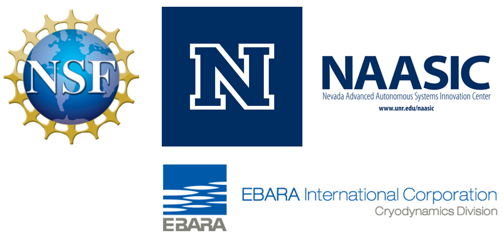

Research

Our group conducts fundamental theoretical, computational, and experimental research in the general area of dynamical systems, dynamics and vibrations, and smart and multifunctional materials. We are interested in understanding, modeling, and harnessing nonlinear aspects of multiphysics coupling at different scales for relevant engineering applications.
Our sponsors include the National Science Foundation, the University of Nevada, Reno, as well as local industry sponsors. A list of our current and completed projects can be found below.
Federally funded projects
- NSF CMMI-1847513: CAREER: Fluid-Structure-Control Interactions in Bioinspired Robots with Actively Morphing Fins, 07/2019-06/2024 (PI: M. Aureli)
- NSF ECC-1852578: REU SITE: Biomimetic and Soft Robotics (BioSoRo): from Biological Inspirations to Engineered Mechanisms, 04/2019-03/2022 (Senior Personnel: M. Aureli)
- NSF ECCS-1809852: Collaborative Research: Microengineered electroactive polymer strain sensors towards soft self-powered wearable cyber-physical systems, 08/2018-07/2021 (PI: M. Aureli)
Selected internally funded projects
- NAASIC 2016 Seed Funding for Interdisciplinary Research: "Environmental sensing using autonomous underwater vehicles", 05/2016-01/2017, (PI: M. Aureli)
- NAASIC 2016 Seed Funding for Innovations in Autonomous Systems: "Sensing Environmental Change in Freshwater Ecosystems via the Development of Autonomous Water Vehicles", 05/2016-01/2017, (Co-PI: M. Aureli)
- Differential Fees Committee, UNR: "Acquisition of a High-Performance Computing Cluster", 04/2016-06/2016 (PI: M. Aureli)
- Office of the VPRI, UNR: Acquisition of Instructional and Research Equipment (AIRE): Nevada Unmanned Autonomous Systems (UAS) and Advanced Manufacturing (AM) Research Infrastructure, 03/2014-02/2015, (Co-PI: M. Aureli).
Industry supported projects
- EBARA International Corporation, Cryodynamics Division: "Design and Development of a Jet Exducer for Two-Phase Cryogenic Expander", 08/2013-05/2019 (Co-PI: M. Aureli)
Thank you to our sponsors!
Laboratory and Facilities
The Multiphysics Laboratory is a ~400 sqft facility located in Palmer Engineering 009.
The Multiphysics Laboratory in the Mechanical Engineering (ME) Department at the University of Nevada, Reno (UNR) was established in July 2013 by Dr. Matteo Aureli. The mission of the lab is to conduct state-of-the-art fundamental and applied research in the fields of mechanics, physics, and control of complex engineering systems.
Fluid-structure interaction and vibrations
The lab conducts experimental research in fluid and solid mechanics, fluid-structure interaction, and vibrations. Key experimental equipment available in the lab includes:
- Kinetic Systems Inc. research-grade vibration isolation table (4'x8'x12'')
- TSI Inc. Particle Image Velocimetry/Particle Laser Induced Fluorescence (PIV/PLIF) system including optics, lenses, filters, and dedicated hardware/software
- OptoEngine LLC 5W continuous wave laser, 532nm wavelength, 1.5mm beam, better than 10% power stability
- Phantom Miro M120 high speed camera (resolution 1920x1200 at 730 fps, CMOS sensor with 10µm pixel size)
- Vibration Research VR5200 shaker and power amplifier and Vibration Research VR8500 vibration control system
- Meggitt Endevco Miniature Isotron Accelerometers 2250A-10 and signal conditioners
- National Instruments NI USB-6341 X Series DAQ
- Transducer Techniques GSO-100 load cell and TMO-2 signal conditioner
- Micro-Epsilon optoNCDT1401 laser displacement sensors
- Several function generators, digital oscilloscopes, and power supplies
Smart materials fabrication, modeling, and characterization
The lab conducts experimental research on chemo-electro-mechanics modeling and characterization of smart materials. Key experimental equipment available in the lab includes:
- Gamry Interface 1000 potentiostat with impedance spectroscopy
- HP 35660A Dynamic Signal Analyzer
- Olympus BXiS Digital metallurgical microscope
- Stapla Condor Ultrasonic metal welding system
- Dell Precision T7810 Workstation, 2x Intel Xeon CPU E5-2630 vs @2.60GHz (24 cores), 124 GB RAM, with NVIDIA GPU
- Several desktop/laptop PCs equipped with MATLAB, Mathematica, ANSYS, Fluent, LabVIEW, and MS Office package